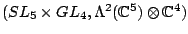

< Japanese/English >
天野勝利 (Amano, Katsutoshi)
Researchmap のページへ (研究者データベース)
担当講義
研究関係
出版論文
- Hopf algebraic approach to Picard-Vessiot theory (with A. Masuoka and M. Takeuchi), In: M. Hazewinkel (ed.), "Handbook of Algebra", Vol. 6, Elsevier, 2009, pp. 127--171.
- Liouville extensions of artinian simple module algebras, Comm. Algebra 34 (2006), 1811--1823.
- Picard-Vessiot extensions of artinian simple module algebras (with A. Masuoka), J. Algebra 285 (2005), 743--767.
- Construction of irreducible relative invariant of the prehomogeneous vector space (with M. Fujigami and T. Kogiso), Linear Algebra Appl. 355 (2002), 215--222.
研究メモ
博士論文
和文原稿
- $D$-加群代数の Picard-Vessiot 理論における Liouville 拡大, 2009年1月30日, 第２回つくば代数学ワークショップ < dvi > < pdf >
- $D$-加群代数の Picard-Vessiot 理論, 2008年12月18日, 筑波大学数学系談話会レジュメ < dvi > < pdf >
- 線形微分・差分方程式と affine group scheme, 第 8 回「代数群と量子群の表現論」研究集会・報告集 < dvi > < pdf > (correction)
- 井草氏の結果の多変数化(局所ゼータ関数がガンマ関数の積で書ける場合について), 京都大学数理解析研究所講究録 No.1238 (2001), 1--11. < dvi > < pdf > (correction)
- 多変数局所関数等式の$b$-関数による具体的表示, 筑波大学修士論文, 2001. < dvi > < pdf > (correction)